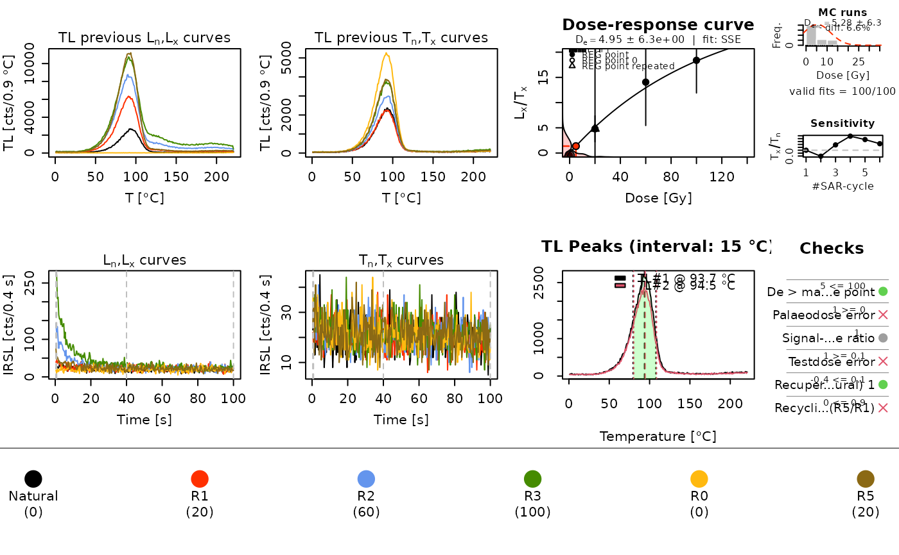

Compute SAR palaeodoses using natural sensitivity correction (NCF)
Source:R/analyse_SAR.NCF.R
analyse_SAR.NCF.RdThe function computes the natural sensitivity correction factor (NCF) for the assessment of single aliquot regeneration based palaeodoses. This allows to produce \(D_e\) values that account for sensitivity changes that may occur during the preheat and readout of the natural OSL.
Arguments
- object
RLum.Analysis or list of RLum.Analysis objects (required): input object containing data for analysis. If a list is provided the functions tries to iterate over each element in the list.
- TL_peak_range
numeric (with default): size of the integration window in deg. C on each side of the identified peak.
- method_control
list (optional): parameters to control the peak-finding step (see Details).
- ...
further arguments that will be passed to fit_DoseResponseCurve, plot_DoseResponseCurve or calc_OSLLxTxRatio (the latter only supports
background.count.distribution,sigmab,sig0,od_rates). Additionally, supported arelegend.cexandlegend.pchto modify the legend symbols. Note: If you consider using the early light subtraction method,sigmabshould be provided.Note:
od_ratescan be used to treat uncertainties in Lx/Tx according to Bluszcz et al. (2015) instead of the standard approach of Galbraith (2002, 2014). See calc_OSLLxTxRatio for details.
Value
Plots (optional) and an RLum.Results object is returned containing the following elements:
| DATA.OBJECT | TYPE | DESCRIPTION |
..$data : | data.frame | Table with corrected \(D_e\) values |
..$LnLxTnTx.table : | data.frame | Corrected LnLxTnTx values |
..$rejection.criteria : | data.frame | Rejection criteria |
..$Formula : | list | Function used for fitting of the dose response curve |
..$data_uncor : | data.frame | Table with the uncorrected data |
..$LnLxTnTx.table_uncor : | data.frame | Uncorrected LnLxTnTx values |
..$NCF_settings : | list | Setting used for TL peak finding |
This output is similar to the output of analyse_SAR.CWOSL extended by a few more elements.
Details
This function is a wrapper around analyse_SAR.CWOSL: it works in a similar way, but corrects the natural OSL signal according to Singhvi et al. (2011) and by implementing the MatLab code reported in Kaushal et al. (2022).
The NCF procedure
The NCF protocol modifies the standard SAR protocol by adding a small dose before the readout of the natural signal; the corresponding 110 deg. C TL peak in quartz is monitored and compared to the TL peak recorded during the typical cutheat measurement. The additional dose used for the NCF TL curves is subtracted automatically. The published NCF sequence structure must be followed, otherwise the correction will not work.
The natural sensitivity correction factor (NCF) is measured as the ratio of the 110 deg. C TL peaks before and after the measurement of natural OSL, accounting for an integration range around the peak, typically 15 deg. C or the full width at half maximum (FWHM).
TL peak finding
The TL peaks are found automatically by finding the position with highest counts below 160 deg. C (after some smoothing has been applied to the counts data) for each of the two TL curves.
The peak search parameters can be controlled via the method_control
argument. If used, this must be a list with one or more of the following
named arguments (e.g. method_control = list(search.threshold.degrees = 130)):
peak.temperature: this can be used to set the temperature of the TL peak manually; if set toNULL(default), the peak is found automaticallysearch.threshold.degrees: threshold in deg. C below which the peak is searched (160 by default); this is ignored ifpeak.temperatureis notNULL
The identified TL curves and the chosen signal integral are shown in the graphical output.
How to cite
Colombo, M., Kreutzer, S., 2026. analyse_SAR.NCF(): Compute SAR palaeodoses using natural sensitivity correction (NCF). Function version 0.1.0. In: Kreutzer, S., Burow, C., Dietze, M., Fuchs, M.C., Schmidt, C., Fischer, M., Friedrich, J., Mercier, N., Philippe, A., Riedesel, S., Autzen, M., Mittelstrass, D., Gray, H.J., Galharret, J., Colombo, M., Steinbuch, L., Boer, A.d., Bluszcz, A., 2026. Luminescence: Comprehensive Luminescence Dating Data Analysis. R package version 1.3.0. https://r-lum.github.io/Luminescence/
References
Kaushal, R.K., Chauhan, N., Singhvi, A.K., 2022. Luminescence dating of quartz: A MATLAB-based program for computation of SAR paleodoses using natural sensitivity correction (NCF). Ancient TL, 40 (2), 1-7. doi:10.26034/la.atl.2022.561
Singhvi, A.K., Stokes, S.C., Chauhan, N., Nagar, Y.C., Jaiwal, M.K., 2011. Changes in natural OSL sensitivity during single aliquot regeneration procedure and their implications for equivalent dose determination. Geochronometria, 38 (3), 231-241. doi:10.2478/s13386-011-0028-3
Author
Marco Colombo, Institute of Geography, Heidelberg University (Germany)
Sebastian Kreutzer, LIAG Institute for Applied Geophysics (Germany)
, RLum Developer Team
Examples
## Load example data
file <- system.file("extdata/NCF.binx", package = "Luminescence")
ncf <- read_BIN2R(file, fastForward = TRUE)
#>
#> [read_BIN2R()] Importing ...
#> path: /home/runner/work/_temp/Library/Luminescence/extdata
#> file: NCF.binx
#> n_rec: 37
#>
|
| | 0%
|
|== | 3%
|
|==== | 5%
|
|====== | 8%
|
|======== | 11%
|
|========= | 14%
|
|=========== | 16%
|
|============= | 19%
|
|=============== | 22%
|
|================= | 24%
|
|=================== | 27%
|
|===================== | 30%
|
|======================= | 32%
|
|========================= | 35%
|
|========================== | 38%
|
|============================ | 41%
|
|============================== | 43%
|
|================================ | 46%
|
|================================== | 49%
|
|==================================== | 51%
|
|====================================== | 54%
|
|======================================== | 57%
|
|========================================== | 59%
|
|============================================ | 62%
|
|============================================= | 65%
|
|=============================================== | 68%
|
|================================================= | 70%
|
|=================================================== | 73%
|
|===================================================== | 76%
|
|======================================================= | 78%
|
|========================================================= | 81%
|
|=========================================================== | 84%
|
|============================================================= | 86%
|
|============================================================== | 89%
|
|================================================================ | 92%
|
|================================================================== | 95%
|
|==================================================================== | 97%
|
|======================================================================| 100%
#> >> 37 records read successfully
results <- analyse_SAR.NCF(
object = ncf,
signal_integral = 1:2,
background_integral = 100:250,
dose_rate_source = 0.1)
#> [analyse_SAR.CWOSL()] Fit: SSE (interpolation) | De = 4.95 | D01 = 104.83
#> [analyse_SAR.NCF()] Fit: SSE (interpolation) | De = 4.28 | D01 = 104.83
